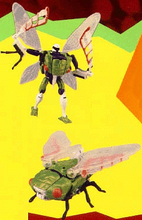
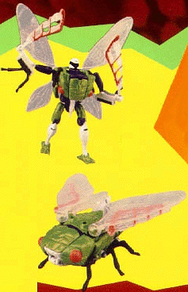
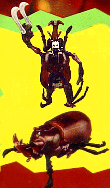
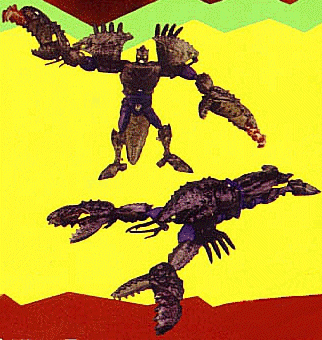
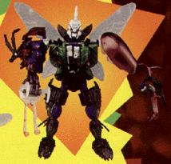

Difficulty of Transformation from Beast to Robot : Medium
Difficulty of Transformation from Beast to Tripredacus part : Hard
Color Scheme : Green, white, purple, and some grey-black, transparent off-white, and neon orange
Individual Rating : 6.0
Allegiance
: Predacon
Size
: Ultra (when combined)
Overall Rating
: 6.9
 Cicadacon
Cicadacon

Difficulty of Transformation from Beast
to Robot
: Medium
Difficulty of Transformation from Beast
to Tripredacus part
: Hard
Color Scheme
: Green, white, purple,
and some grey-black, transparent off-white, and neon orange
Individual Rating
: 6.0
Beast mode is a cicada.
Looks very nice from the front; nice eyes, a little blood sucker, and
large wings. His hands are clearly visible, though, and he has no rear
end. His legs are just folded up on the backside, and so his back side
looks very poor. The detailing is very nice, though the articulation is
limited to just the wings and the blood sucker.
Robot mode is decent,
with few extras. His cicada legs on his arms look weird, but dont get
in the way, but his blood sucker is odd-looking in its placement. His chest
also sticks out way too much, and, although it doesn't get in the way,
it makes him top-heavy. Part of two of his wings become large swords, and,
although they are sort of stubby-looking, look pretty neat.
Forms Tripredacus head
and chest.
He has a poor beast
mode, but his robot mode is pretty decent.
 Ram
Horn
Ram
Horn

Difficulty of Transformation from Beast
to Robot
: Very Hard
Difficulty of Transformation from Beast
to Tripredacus part
: Very Hard
Color Scheme
: Purple, white, and
brown, with some yellow, transparent off-white, and black-gray
Individual Rating
: 6.5
Beast mode is a rhinoceros
beetle. Looks almost exactly like one, with out any obvious cracks or lines
on the top. (The bottom is different, though.) He has a lot of extras on
the bottom that restrict movement and his legs are extremely small in proportion
to his body size, which looks a bit odd. The detailing is not that good
in this mode, and the articulation is limited to the neck and horn of the
beetle.
Robot mode is extremely
hard to transform into; actually, in my opinion, Ramhorn is the hardest
of all the Beast Wars transformers to transform. There are some extras,
like his beetle antennae and face halves on top of and to the side of his
head, and his humongous shell on his back, as well as his insect legs on
his robot legs and his upper back. He has a nicely done sabre claw sword,
though, and his upper head is actually a seperate part than the rest of
his head, making this one of the few Beast Warriors that can actually close
and open its mouth in robot mode. He has large, menacing claws that look
nice, and he is a bit better detailed in this mode.
Forms the arms of Tripredacus.
A nice robot, but a
bit heavy on the extras in robot mode, and extremely hard to transform.
 Sea
Clamp
Sea
Clamp

Difficulty of Transformation from Beast
to Robot
: Easy
Difficulty of Transformation from Beast
to Tripredacus part
: Medium
Color Scheme
: Purple and transparent
brown, with some white, neon green, and goldish brown
Individual Rating
: 7.5
Beast mode is a lobster.
Extremely well-crafted, with little bumps in the plastic and small legs,
and even little feelers on his mouth that can move. His robot legs stick
out of the back and are a bit obvious, though.
Robot mode makes Sea
Clamp look like a strongarm. There are little extras, except for his lobster
face halves on his arms, which can restrict some movement there, and his
lower shell on his rear, which can restrict leg movement some. His legs
are normal size, but his arms are longer than his body! His claws have
a littlle jagged knife that flips out of them, and looks odd, but cool.
He has a missle launcher on the inside of his tail that he cant seem to
hold; dont worry, this is only supposed to be used by Tripredacus.
Makes up the feet of
Tripredacus.
A nice transformer,
with very few extras.
 Tripredacus
Tripredacus

Difficulty of Transformation
: Very
Hard
Color Scheme
: Green, white, purple,
transparent brown, transparent off-white, and grey-black, with some neon
green and orange
Individual Rating
: 7.5
Robot mode(the only one
he has) is very menacing. He has a demonic look on his face, and, although
he has a lack of hands, he has some weird-shaped claws and a large sword/missle
launcher, composed of Sea Clamps missle launcher and Ram Horns sword.
He has very large feet in proportion to his body, made from Sea Clamps
claws. His middle body looks nice, as does his shoulder armor and waist.
However, his waist part that connects Cicadacon to Sea Clamp can come apart
somewhat easily, which is why I gave this transformer a lower rating than
I originally would have. Sea Clamp's robot legs and lower shell stick out
a bit on Tripredacus' back side, as well.
A recommended transformer,
but, as I said before, his waist can come apart easily, and his arms are
a bit of a stretch.
Review by Beastbot